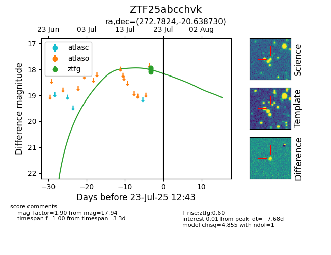

Target ZTF25abcchvk at 2025-07-23 12:43, see:
FINK: fink-portal.org/ZTF25abcchvk
Lasair: lasair-ztf.lsst.ac.uk/objects/ZTF25abcchvk
ALeRCE: alerce.online/object/ZTF25abcchvk
alt names
ZTF25abcchvk (ztf,fink)
coordinates:
equatorial (ra, dec) = (272.7824,-20.63873)
galactic (l, b) = (10.0766,-0.85905)
photometry
last ztfg=17.94
6 ztfg detections
